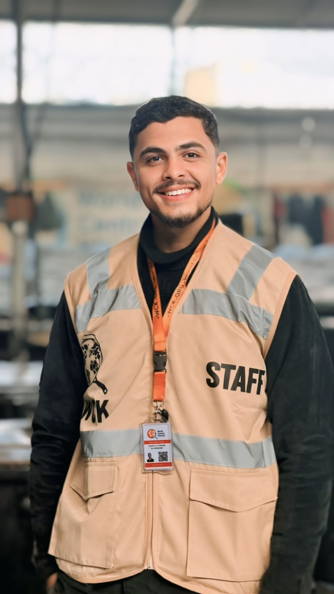

Bridging the gap between engineering systems, technical troubleshooting, and robust field operations.
A dedicated and highly adaptable Computer Systems Engineering graduate with practical experience combining technical expertise and field operations. Proven track record in humanitarian operations through coordination roles with World Central Kitchen (WCK), demonstrating strong crisis management, logistics coordination, and teamwork abilities. Possesses solid foundational skills in software development, database management, and networks. Exceptional ability to perform under pressure and adapt to challenging, fast-paced environments.
Developed a full-featured, web-based system designed to streamline hospital administration tasks and optimize patient management workflows.
Palestine Technical College – Deir El-Balah
Key Coursework: OOP, Data Structures, Software Engineering, Database Management Systems, Computer Networks.